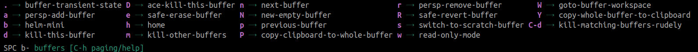

Vim Quick Reference
A reference of the most common keybindings available in Vim Normal mode. Spacemacs DOCUMENTATION key bindings section contains full details
. repeats the last keybinding sequence used in Vim Normal mode or a change made within a complete Vim Insert session.
Moving around
In normal mode you can keep your fingers resting on the main row of your keyboard to move around.
| Key | action |
|---|---|
j |
move cursor down one line |
k |
move cursor up one line |
l |
move cursor right one character |
h |
move cursor left one character |
In menus such as helm you can move around using Ctrl and these keybindings. So C-j will move the cursor down one item in a menu.
Navigating the current line
| Key | Action |
|---|---|
f |
to next character (you specify) |
t |
to just before the next character |
; |
repeat f or t search |
w |
start of next word |
W |
start of next word, white space delimited |
e |
end of current word |
b |
start of previous word |
W |
end of next word, white space delimited |
* |
to next matching symbol name |
$ |
end of current line |
0 |
start of current line |
^ |
start of non-whitespace |
% |
jump to matching parens or next closed paren |
Navigating the current buffer
| Key | action |
|---|---|
gg |
start of buffer |
G |
end of buffer |
H |
move cursor to head of buffer |
M |
move cursor to middle of buffer |
L |
move cursor to bottom line of buffer |
C-u |
jump up half a page |
C-d |
jump down half a page |
} |
move cursor forward by paragraph or block |
{ |
move cursor backward by paragraph or block |
ma |
mark a line in a file with marker "a" |
`a |
after moving around, go back to the exact position of marker "a" |
'a |
after moving around, go back to line of marker "a" |
:marks |
view all the marks |
'' |
go to the last place you were |
[{ |
jump back to the "{" at the beginning of the current code block |
SPC j i |
jump using helm list of headings / functions |
SPC j j |
avy-jump to character (specify) |
SPC j l |
avy-jump to line |
C-o |
jump back to previous cursor location (evil-jump-backwards) |
C-i |
Go to newer position in jump list (opposite of C-o) |
: 4 |
go to line 4 |
Searching
Searching buffers and projects with helm-swoop is recommended.
SPC s s - helm-swoop - shows a buffer with all search results, C-j and C-k navigates through results.
SPC s p for a project wide search.
\b defines a boundary around the search term. For example search\b will match search, but not searching.
| Key | Action |
|---|---|
* |
search forward for the word under the cursor |
# |
search backward for the word under the cursor |
/ |
search forward in current buffer |
? |
search backward in current buffer |
n |
once searching: find forward |
N |
once searching: find backwards |
Ensure RET is pressed after / search
Using / to search should be completed by pressing RET or deleting the search term in the mini-buffer before using Evil keybindings. When in the search state the Evil keybindings act more destructively.
Use SPC s s for helm swoop rather than /
Text Editing
The following commands put you into the Evil Insert state
| Key | Action |
|---|---|
i |
insert state at cursor |
I |
insert state at start of line |
a |
append - insert state after cursor |
A |
append - insert state at end of line |
o |
new line after cursor |
O |
new line before cursor |
Return to Normal state
Regularly switch between normal and insert states is normal practice in Spacemacs. As soon as you finish typing some new text, it should become second nature to go back to normal state. c Switching from insert to normal state:
ESC or press f d keys in extremely quick succession.
Hint
Using f d together is low risk as if you dont get it right it will either add the characters or try find the next d character (as f moves to the next character).
Keep trying this key combination as once in normal state you can use u to undo any f d characters inserted.
The character sequence can be customized or deactivated by adding evil-escape to dotspacemacs-excluded-packages in the ~/.spacemacs configuration file.
Copy, cut, paste, undo, redo
v in Vim normal mode changes to Visual select mode. Use the navigation keys or any other movement keys to select text to copy or cut.
| Key | Action |
|---|---|
y |
copy (yank) selection and add to kill ring |
x |
delete character at point and add to kill ring |
X |
delete character before point and add to kill ring |
p |
paste (put) |
u |
undo |
Ctrl-r |
redo |
Undo tips
Undo will revert the last action in normal mode or all the changes you made in insert state
Replace and changing text
| Key | Action |
|---|---|
r |
replace the character under cursor |
R |
replace multiple characters until ESC |
cw |
change word from cursor to end |
4 c w |
change 4 words |
v (select) c |
change region |
SPC v c |
change current word/region |
SPC v d |
delete current word/region |
d w |
delete from cursor to end of word |
C |
change from cursor to end of line |
D |
delete from cursor to end of line |
d $ |
delete from cursor to end of line |
Combine d | c | v | r with avy-goto
Search and replace
Delete commands
| Key | Action |
|---|---|
de |
delete to end of word, not including space |
dw |
delete to end of word, including space |
d$ |
delete to end of line |
dd |
delete the current line |
4 d w |
delete 4 words |
4 d $ |
delete 4 lines to end |
dt |
delete to a character (not including character) |
dab |
delete a whole block / expression |
dib |
delete contents of a block / expression |
cab |
change all the block / expression |
cib |
change inner block contents / expression |
yab |
yank all block / expression |
yib |
yank inner block contents / expression |
Repeat commands
| Key | Action |
|---|---|
. |
repeat last command again |
<number> <cmd> |
repeat command a number of times |
The . keybinding will repeat the last command in normal mode or the last text edit in insert mode.
Type a number before a command and that command will run that number of times.
Inserting a comment border
Use the number repeat to create a border of 42 ; characters.
Type 42 to repeat the command 42 times
Press i for insert mode
Press ; as the character to repeat insert
Press ESC or fd to leave insert mode and insert all 42 ; characters
Transposing / swap
| Key | Description |
|---|---|
x p or SPC x t c |
transpose the current character with the next character |
SPC x t w |
transpose the current character with the previous character |
SPC x t l |
transpose current line with previous line |
SPC k tf |
transpose expression |
Comments - works for all major modes
SPC ; ; or g c c to comment out the current line
SPC ; or g c to comment out the currently selected region
M-; creates a ;; comment on an empty line, or ; at the end of the text of the current line.
To comment multiple lines you can use the repeat command style, especially useful if you are using relative line numbers.
g c 3 j will comment the current line and the following two lines below. Comment in reverse using g c 3 k.
In Visual state, v, select the lines you wish to comment and use g c to comment all the marked lines. Partially marked lines are not commented.
http://spacemacs.org/layers/+vim/evil-commentary/README.html
Working with Buffers
To work with files in Emacs, they are first loaded into a Buffer.
So when you open a file with M-x find file or SPC f f a new buffer is created so you can manage that file.
Buffers are displayed in a window and you can change the window to show any of the current buffers.
Here are the most commonly used buffer commands
| Key | Command | Description |
|---|---|---|
SPC b b |
helm-mini | List current buffers |
SPC b d |
kill-this-buffer | Kill current buffer |
SPC b h |
home | Switch to Spacemacs home page |
SPC b n |
next-buffer | Switch to next buffer |
SPC b p |
previous-buffer | Switch to previous buffer |
SPC b s |
switch-to-scratch-buffer | Switch to the scratch buffer |
SPC b Y |
copy-whole-buffer-to-clipboard | Copy current buffer contents to kill ring |
See the full buffer menu via SPC b

Managing Files
| Key | Description |
|---|---|
SPC f c |
copy file - save current buffer with a new file name |
SPC f R |
change file name of current buffer |
SPC f y n |
yank file name of current buffer |
Also consider using treemacs and projectile
Quit or Restart Emacs
I recommend using the Spacemacs menu from normal mode to quit / restart Spacemacs.
| Key | Action |
|---|---|
SPC q q |
Quit Spacemacs |
SPS q r |
Restart Spacemacs keeping current window and buffer layout |
SPS q R |
Restart Spacemacs |
Work in progress - sorry
The rest of this section is work in progress and a little messy.
Classic Vim commands
Reference section
The classic vim commands are also available, however, I dont think they are as nice to learn. Adding as reference for those used to Vim already and would miss them.
Substitution
| key | Action |
|---|---|
:s/old/new |
substitute new for the first old pattern |
:s/old/new/g |
substitute new for all 'old's on a line |
:#,#s/old/new/g |
substitute phrases between two line #'s type |
:%s/old/new/g |
substitute all occurrences in the file |
:%s/old/new/gc |
as above, asking for confirmation each time |
External commands
You can run external commands using :! followed by a command. For example:
:!ls - run the ls command
Spacemacs shell can be configured to pop-up a shell buffer to run commands from the directory of the current buffer.
Spelling Checking
As you are typing in any(?) buffer then Spacemacs is checking your spelling as you type. If you type a word that Spacemacs does not recognise then that word is underscored in red. To correct a spelling:
- Move to the word that is incorrectly spelt
SPC S cto change the word and show a list of suggested words- Either type in a new spelling or use
C-jandC-kkeys to move down and back up the list of words, usingRETto select that word.
Scrolling
In evil command mode you can scroll just the text using the classic vi bindings. This does not scroll the cursor unless the cursor hist the top or bottom of the window, in which case the cursor stays at that window boundary.
C-y- scroll downC-e- scroll text up
Jump around
SPC j i shows imenu that lists all the def and defn expressions in the current buffer, allowing you to jump to one of these definitions directly by typing its name or using C-j and C-k to select the name and pressing RET to jump to the name in the buffer
SPC j l labels each line of the buffer with a short, unique character code. By entering the character code you are taken directly to the specific line. This is the avy goto line function and this works on all visible buffers by default, although it can be just shown on the current buffer (TODO: how is this set).
Searching
Search with SPC /